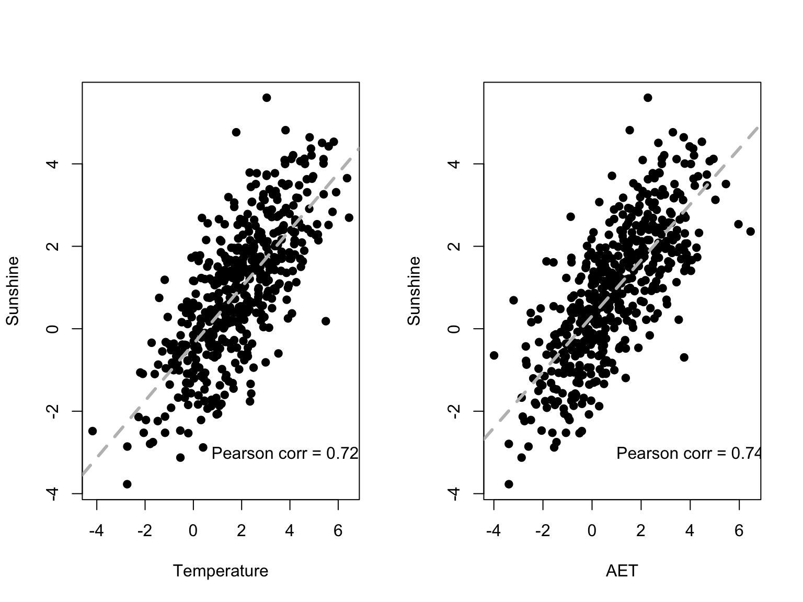
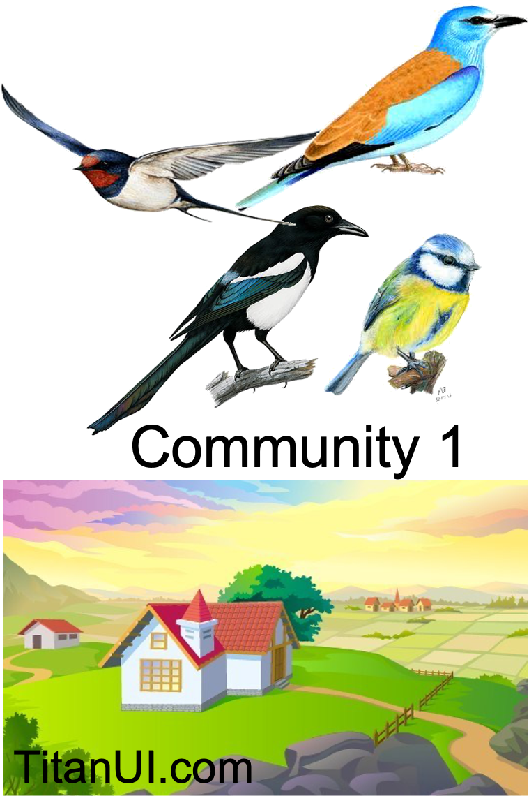
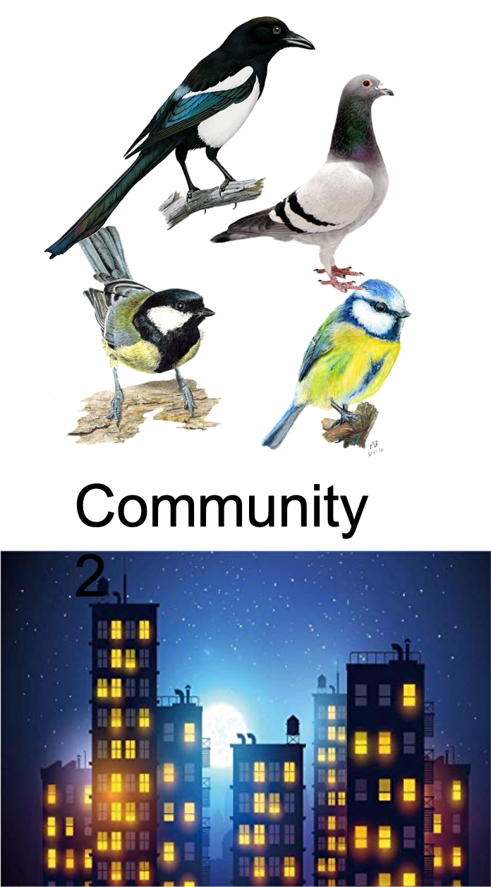
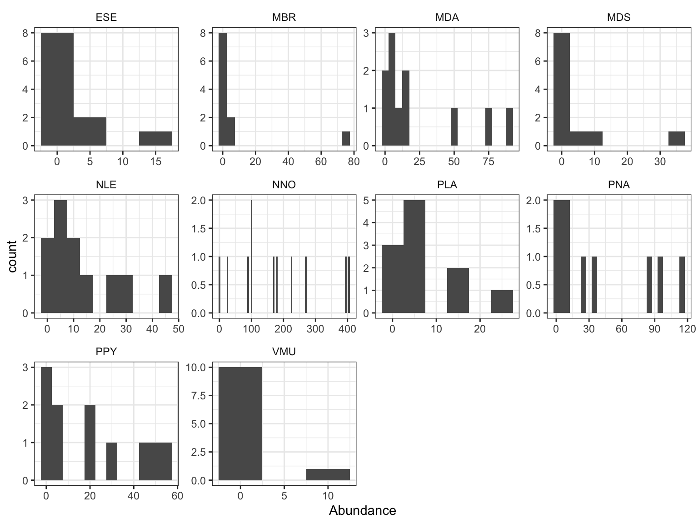
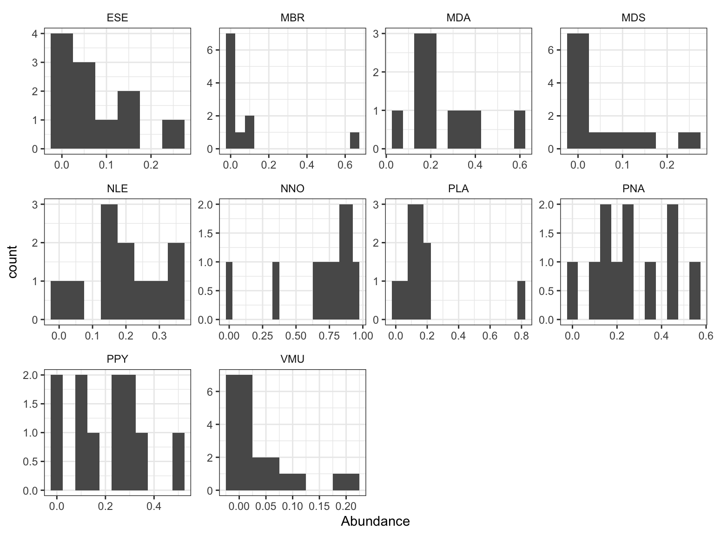

Data types and transformations
Radchuk Viktoriia
2023-03-20
Recall the data structure
Associations
- Between objects (sites, samples)
- Between descriptors (explanatory variables and response variables OR among variables)
Associations between descriptors

Correlations between descriptors
So, each descriptor is one dimension and to investigate associations among them we take correlations or covariances.
Association between objects
Dissimilarity between object pairs: Euclidean distance, Jaccard dissimilarity, Bray-Curtis dissimilarity


How to measure distance between these two sites, that is distances among sites in community composition?
Issues with species data
- Double zeros: absences of species in both sites
cannot be interpreted the same way as presences of the species in both
sites.
- Absence can be due to environment being unsuitable,
due to detection error (species present but not observed) or non-regular
distribution of species across the study sites.
- But: number of zeros increases as we observe larger
number of sites and more species-rich communities (higher number of rare
species usually).
- This also has more technical downside as the distribution of species abundances deviate strongly from normal.
Possible ways to deal with this
- First transform species data so as to approximate
quantitative data, and then apply multivariate methods used for such
quantitative data (e.g. PCA and RDA).
- Use community dissimilarity metrics that measure how different communities are in their composition (and are suited to species data) and apply respective multivariate methods to those data (e.g. PCoA).
Transformation of community data
- Hellinger transformation: convert
species abundance to relative (divide by total abundance in the site)
and then take a square root.
- Chord transformation: Hellinger
transformation is applied to squared abundance data. This leads to the
site vectors being normalised to 1.
- \(\chi^2\)
transformation: the relative abundance of the species in the
site is used, but it is also adjusted for the square root of matrix
total abundances.
- All available using function
decostand()fromveganand specified via optionmethod =.
Chord is implemented under namenormalize.
PCA or RDA on transformed data
After we have transformed the abundance data using one of these transformations, we apply PCA or RDA (depending on whether our goal is unconstrained or constrained ordination). Since we pre-transformed the data, the resulting distances will be not Euclidean but will depend on the transformation we used. And these distances (Hellinger, \(\chi^2\)) are not sensitive to ‘double zeros’, circumventing the problem.
- Hellinger transformation + Euclidean distance (PCA
or RDA) –> Hellinger distance
- \(\chi^2\) transformation + Euclidean distance (PCA or RDA) –> \(\chi^2\) distance
Community (dis)similarity
Jaccard similarity index
Presence-absence based (i.e. based on species richness)
\(J = \frac {a} {(a + b + c)}\),
where a is the number of species that are present in both sites
b is the number of species that are unique to site 1
c is the number of species that are unique to site 2a = 2; b = 2, c = 2
\(J = \frac {2} {(2 + 2 + 2)} = 0.33\)
\(D_J = 1 - J = 1- 0.33 = 0.66\)
Bray-Curtis similarity
Considers species abundances.
\[BC_{ij} = \frac{2 \times C_{ij}}{S_i +
S_j}\]
where \(C_{ij}\) are the sum of
minimum abundances of each species that are found at both sites (i and
j);
\(S_i\) is the total abundance of all
species found in site \(i\);
\(S_j\) is the total abundance of all
species found in site \(j\).
Different dissimilarity metrics are available with function
vegdist() in vegan and specified via option
method =.
Application
Bat community in Eastern Ukrainian forests
## 'data.frame': 11 obs. of 30 variables:
## $ plot_Acr : chr "KOZ" "TET" "PEC" "MOK" ...
## $ plot.Num : int 1 2 3 4 5 6 7 8 9 10 ...
## $ MDA : int 14 12 14 1 5 51 89 3 74 5 ...
## $ MBR : int 0 1 0 73 0 4 4 0 0 0 ...
## $ MDS : int 0 0 8 0 0 1 7 0 37 0 ...
## $ NNO : int 0 269 180 26 88 397 406 99 224 168 ...
## $ NLE : int 1 15 6 23 4 11 3 0 47 29 ...
## $ ESE : int 0 6 0 3 0 2 1 1 2 17 ...
## $ PNA : int 0 8 117 12 6 23 84 37 94 4 ...
## $ PPY : int 0 4 19 44 0 52 57 20 29 6 ...
## $ PKU : int 0 0 0 0 0 1 0 0 0 0 ...
## $ VMU : int 0 0 0 0 1 0 2 8 1 0 ...
## $ PLA : int 24 13 14 4 1 3 7 0 6 4 ...
## $ NLA : int 0 0 0 0 0 0 0 0 0 4 ...
## $ MN.Hours : num 88 54.8 39.8 75.8 58 ...
## $ field : num 290.1 3.8 0 0 307.8 ...
## $ meadow : num 4 48.6 3.2 141.7 26.7 ...
## $ forest : num 380 356 540 648 143 ...
## $ forest_cut : num 85.4 10.2 62 0 0 0 0 0 0 12.9 ...
## $ lake : num 0.2 2.5 76.6 5.7 1.1 ...
## $ river : num 0 0 0 16.6 0 15.7 21 0 0 0 ...
## $ settlement : num 0 75.5 0 1.1 0 11.1 0 24.9 8.8 32.2 ...
## $ Total_Hab : num 759 497 682 814 479 ...
## $ clearcut : num 85.4 10.2 62 0 0 0 0 0 0 12.9 ...
## $ conif_to90 : num 0 0 0 0.4 0 0 0 0 0 0 ...
## $ conif_More91 : num 13.5 0 0 0 0 0 0 0 0 4.4 ...
## $ decid_10_40 : num 69.3 0 1.5 15.7 3.1 0.8 2 0.6 6.8 0 ...
## $ decid_41_90 : num 233.6 226.9 74.7 313.5 104.6 ...
## $ decid_More90 : num 32.1 65.5 439.7 133.5 35.3 ...
## $ decid_More150: num 31.3 63.7 24 185.3 0 ...Explore species data
com <- subset(dat, select = c(MDA, MBR, MDS, NNO, NLE, ESE, PNA, PPY, VMU, PLA)) # PKU, NLA removed
com_long <- pivot_longer(com, cols =everything(), names_to = 'Species',
values_to = 'Abundance')
ggplot(com_long, aes(x = Abundance)) +
geom_histogram(binwidth = 5) +
facet_wrap(vars(Species), scales = "free") + theme_bw() +
theme(strip.background = element_blank())
Transform data
We use Hellinger transformation
hel_com <- decostand(com, method = 'hellinger')
hel_com_long <- pivot_longer(hel_com, cols =everything(), names_to = 'Species',
values_to = 'Abundance')
ggplot(hel_com_long, aes(x = Abundance)) +
geom_histogram(binwidth = 0.05) +
facet_wrap(vars(Species), scales = "free") + theme_bw() +
theme(strip.background = element_blank())
Compute distances directly
## 1 2 3 4 5 6 7
## 2 0.8583106
## 3 0.8539043 0.3498542
## 4 0.9466667 0.7587549 0.7500000
## 5 0.9027778 0.5196305 0.5507559 0.7388316
## 6 0.9382504 0.2889908 0.4545455 0.7178082 0.6795069
## 7 0.9370529 0.3825911 0.3831041 0.7754137 0.7281046 0.1112957
## 8 0.9710145 0.5362903 0.3992395 0.6610169 0.2820513 0.5898876 0.6086957
## 9 0.9240506 0.3562945 0.2500000 0.7228571 0.6607431 0.3497164 0.2691652
## 10 0.9264706 0.2655971 0.3468697 0.6801909 0.3964497 0.4877735 0.5722284
## 11 0.9354839 0.4774775 0.5189873 0.7417219 0.1312217 0.6484848 0.7139175
## 8 9 10
## 2
## 3
## 4
## 5
## 6
## 7
## 8
## 9 0.5278592
## 10 0.4364090 0.4163320
## 11 0.2746479 0.6317460 0.3352436Visualise Bray-Curtis dissimilarities

Another way to visualize

Length of the gradient
- If environmental gradient that was sampled is
rather short, the relation between species abundance and environment can
be approximated as linear –> use linear approaches (PCA and RDA).
Usually axis is shorter than 3SD.
- If environmental gradient is long, then we expect a
unimodal response of a species across the gradient –> use unimodal
approaches (CA, CCA). Usually axis is longer than 4SD.
- Length of the gradient can be obtained by running DCA (the length of the first DCA axis indicates the length of the gradient).
Summary

@Modified from Legendre & Gallagher 2001